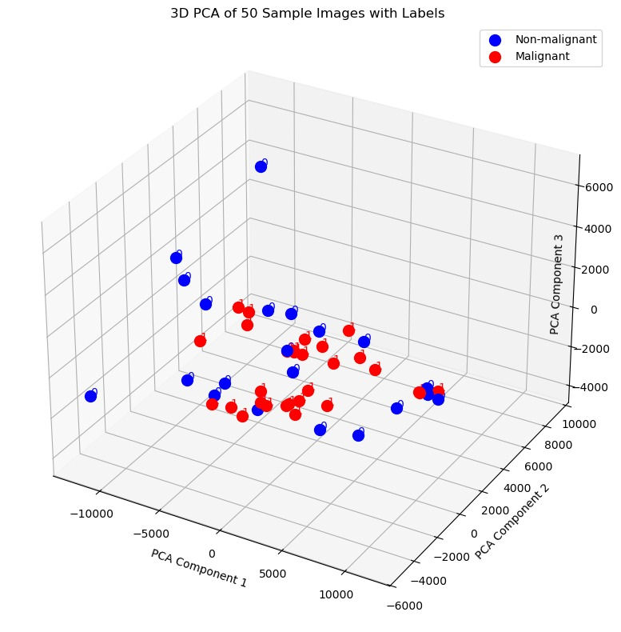
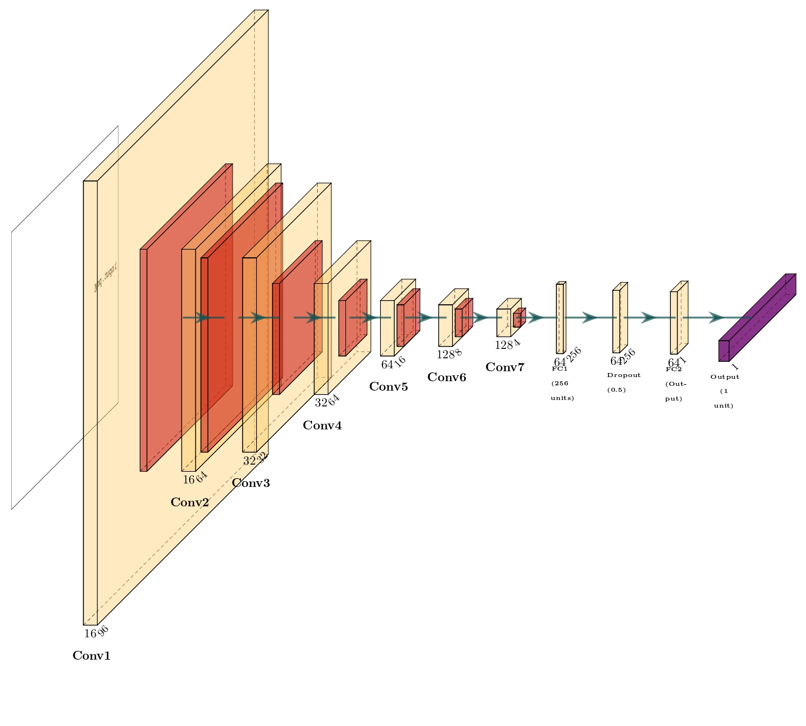
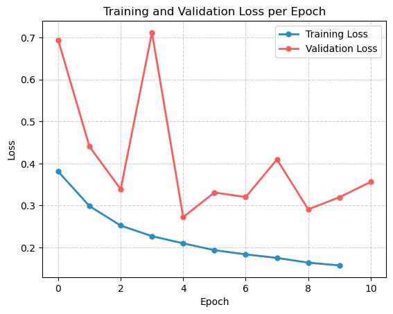
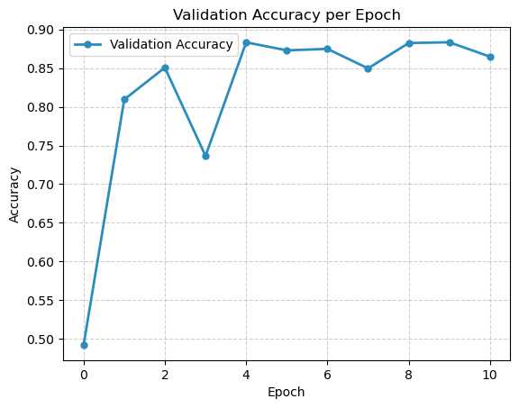
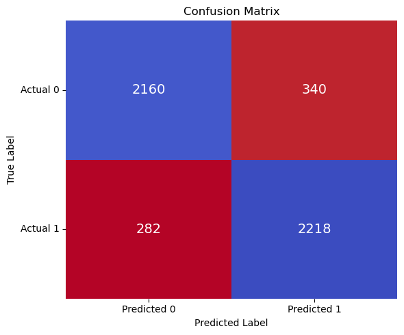

ML for Histopathologic Image Classification in Medical Diagnosis and Cancer Detection.
For more details and access to the project code, visit our GitHub.
Abstract
Lymph node tissue pathological analysis is a common method used by doctors to evaluate the type and stage
of breast cancer. Leveraging deep learning algorithms to detect
lymph node metastases in breast cancer holds significant research
potential. In this study, we propose a convolutional neural
network (CNN) model for the automated classification of lymph
nodes. The method is applied to PatchCamelyon (PCam) data
set. Experimental results show good performance with F1 score
of 0.8770 for the medical image classification and detection task.
Index Terms : deep learning, lymph nodes, histopathology,
convolutional neural network, CNN
Introduction
With the advent of technologies like convolutional neural
networks (CNNs), the classification of images has become
a crucial aspect of machine learning. In the past, essential
improvements have been facilitated by datasets like as MNIST,
CIFAR, and SVHN. However, deep learning has emerged
as a key component of medical imaging, particularly in the
detection of metastases in histopathologic scans. The Camelyon16 [1] Challenge created the PatchCamelyon (PCam)
dataset, which consists of 327,680 96x96 pixel color pictures
annotated for tumor presence.
Recent studies highlight the utility of CNNs in analyz
ing histopathological data, where models like ResNet and
DenseNet have achieved state-of-the-art performance in tumor
detection tasks by leveraging robust architectures and efficient
optimization techniques [1], [2]. The use of batch normalization and adaptive optimizers, such as Adam, has further
enhanced model convergence and stability, reducing overfitting
risks [3], [4]. The dataset’s efficient gzipped HDF5 storage
facilitates scalable training on single GPUs, making it a bench
mark for evaluating medical image analysis models [5]. The
dataset offers metastasis identification as a binary classification
task. In order to achieve dependable and efficient learning
outcomes, this study aims to classify PCam pictures using
CNNs by employing batch normalization, Adam optimization,
and a balanced training-validation split and focuses mainly on
recall and accuracy.
Methodology
A. Data Preparation:
The PCam dataset, derived from the Camelyon16 Challenge, is designed for binary classification of histopathologic images to detect metastasis. The dataset initially contained 327,680 images (96x96 pixels), reduced to 277,516 unique samples by removing duplicates using MD5 hashing.
To address class imbalance (favoring non-malignant samples), a downsampling technique was applied, resulting in equal representation of classes:
Training set: 89,117 samples/class
Validation set: 11,722 samples/class
Test set: 12,994 samples/class
A manageable subset of 50,000 samples was created and split 8:1:1 into training (40,000), validation (5,000), and test (5,000) sets. These steps ensured a balanced, clean, and well-structured dataset for training.
B. Exploratory Data Analysis (EDA):
EDA aimed to understand data characteristics through visualization, dimensionality reduction, and statistical analysis:
Visual Inspection:
Sample images (malignant in red, non-malignant in blue) highlighted subtle visual differences between classes, underscoring the complexity of classification.
To address class imbalance (favoring non-malignant samples), a downsampling technique was applied, resulting in equal representation of classes:
Dimensionality Reduction:
To simplify and visualize the dataset’s high-dimensional image data, dimensionality reduction techniques were applied:
Principal Component Analysis (PCA):
Reduced the dataset to 2D and 3D spaces to explore overall data distribution.
Key Observation: While some clustering was visible, significant overlap between malignant and non-malignant classes indicated complexity in classification.
Fig 1: 2D PCA visualization showing data clustering in two dimensions.

Fig 2: 3D PCA visualization showing data distribution across three dimensions.
Provided better visualization of local patterns, complementing PCA.
Applied in both 2D and 3D.
Key Observation: t-SNE revealed clusters but also highlighted overlaps, confirming the need for robust models to distinguish classes effectively.
Fig 3: 2D t-SNE visualization of data clusters in three-dimensional space.Fig 4: 3D t-SNE visualization of data clusters in two-dimensional space.
Statistical Analysis
Statistical measures were computed for each dataset split (training, validation, and test):
Mean values: Calculated for each RGB channel to assess average color distributions across images.
Standard deviations: Quantified the spread of pixel intensity values, showing the variance within each channel.
Key Insights:
The consistency of these metrics across data splits confirmed a well-balanced and homogeneous dataset,
crucial for unbiased model training.
Both techniques were color-coded by class, aiding in the identification of any class-based patterns or separations.
Model Selection and Experiments
This section describes the process of selecting the optimal model for classifying histopathologic scans as malignant or non-malignant. The experiments progressed from traditional machine learning algorithms to Convolutional Neural Networks (CNNs), focusing on accuracy and recall.
1) Classic Machine Learning Models
We evaluated baseline performance using traditional machine learning algorithms on balanced subsets of the dataset (10,000 training, 2,500 validation, 2,500 test samples). The data was normalized and reshaped into 1D vectors. The models tested included:
Random Forest Classifier
Support Vector Machine (SVM)
K-Nearest Neighbors (KNN)
XGBoost Classifier
Model
Accuracy
Precision
Recall
F1 Score
Random Forest
79.3%
0.794
0.793
0.793
SVM
79.5%
0.796
0.795
0.795
K-Neighbors
72.2%
0.724
0.722
0.721
XGBoost
80.4%
0.804
0.804
0.804
Table I shows the performance of these models:
XGBoost achieved the highest performance among the classic models. However, due to its limitations in capturing complex spatial features, we moved forward to explore deep learning models.
2) Convolutional Neural Networks (CNNs)
We transitioned to CNNs because of their ability to learn spatial hierarchies of features from images. Our initial CNN experiment without data augmentation yielded the following performance:
Accuracy: 85.98%
Precision: 0.900
Recall: 0.8006
3) CNN Depth Experiment
To optimize the architecture, we experimented with different depths of the CNN:
5-layer CNN:
Accuracy: 84.82%
Precision: 0.9002
Recall: 0.7832
10-layer CNN:
Accuracy: 80.92%
Precision: 0.8888
Recall: 0.7068
The 7-layer CNN offered the most balanced performance, improving recall without sacrificing precision or overall accuracy.
4) Impact of Data Augmentation
By applying data augmentation to the 7-layer CNN, we further improved recall, enhancing the model's robustness and generalization ability.
5) Justification for Selecting CNN
We selected the CNN as the primary model for the following reasons:
It has a superior ability to capture spatial features in images.
It significantly outperforms traditional machine learning models.
The 7-layer architecture offers an optimal balance of complexity and performance.
It has the potential for further improvements through data augmentation.
In conclusion, the 7-layer CNN with data augmentation emerged as the most suitable model, achieving superior performance in key metrics critical for medical image classification tasks.
Model Building
Our study employs a Convolutional Neural Network (CNN) tailored for binary classification of histopathologic scans. The model, named PCamClassification, consists of convolutional, batch normalization, pooling, and fully connected layers.

Figure 5. CNN Architecture Layers1) Training Process
The training process includes the following steps:
Data Preprocessing: All images are normalized by scaling pixel values to the range [0, 1], aiding model convergence. The data is divided into mini-batches to leverage efficient batch training.
Loss Function: Binary Cross-Entropy Loss is used, as it is well-suited for binary classification tasks and measures the difference between predicted and true class probabilities.
Optimizer: The Adam optimizer is employed. Adam combines the advantages of both AdaGrad and RMSProp, making it effective for tasks with sparse gradients.
Training Steps: For each mini-batch, the following steps are executed:
Forward Pass: The input batch is passed through the network to generate predictions.
Loss Calculation: The loss is computed using the binary cross-entropy loss function.
Optimization Step: The optimizer updates the model parameters based on the gradients.
Regularization: Dropout with a probability of 0.5 is applied to reduce over-fitting by randomly disabling 50% of the neurons during training.

Fig 6: Training and Validation Loss per Epoch

Fig 7: Validation accuracy per Epoch
2) Hyperparameter Tuning
We applied randomized grid search cross-validation to optimize key hyperparameters:
Learning Rate: Optimal value found at 0.01
7-layer CNN: Provided the best balance of metrics
Weight Decay: Set to 0.000876 for regularization
We manually experimented with various hyperparameters, including learning rate, batch size, threshold, and the depth of the CNN, with the results summarized in Table II.
2) Early Stopping
Early stopping was implemented to prevent overfitting. This technique monitors validation loss and halts training when the loss stops improving, effectively preserving the model’s generalization capability.
3) Evaluation Metrics
The model was evaluated using accuracy, precision, recall, and a confusion matrix.

Figure 6. Confusion Matrix4) Results: Different Model Variants
The performance of different model variants is shown in the table below:
Table II: Performance Metrics and Configurations of Model Variants
The CNN demonstrated strong performance, with a well-balanced set of metrics and particularly strong recall, which is crucial for minimizing false negatives in medical contexts. Based on these results, the CNN was selected as the final model due to its robust performance and ability to capture complex image features effectively.
Interpretability
1) Early Convolutional Layers
Low-Level Feature Extraction: The initial layers capture fundamental features such as edges, textures, and simple patterns. These low-level characteristics help the model build an initial “map” of the image, which is essential for identifying structural differences between malignant and non-malignant areas.
Importance for Prediction: By identifying edges and textures, these layers help the model distinguish cellular structures and basic textures, allowing it to recognize early indicators of malignancy.
3) Batch Normalization Layers
Normalization: Batch normalization layers standardize the outputs from the convolutional layers, stabilizing the learning process. This reduces the model’s sensitivity to variations in input data, which is particularly useful in medical imaging where conditions like lighting, staining, or tissue quality can vary.
Generalization: Normalization helps the model generalize better across diverse datasets by making activations consistent, ensuring that each layer processes inputs on a similar scale. This contributes to reliable performance on unseen data and improves interpretability by making feature maps more stable and meaningful.
4) Pooling Layer (Downsampling)
Dimensionality Reduction: The pooling layer reduces the spatial dimensions of the feature maps, focusing on prominent patterns while discarding finer, less critical details. This simplification helps retain essential features and reduces the computational load.
Pattern Emphasis: After pooling, the model focuses on broader, more prominent patterns rather than fine-grained textures. These high-activation regions often correspond to significant structures or patterns in the image that could indicate malignancy, such as clusters of irregular cells.
Regularization and Robustness: Pooling also serves as a regularizer, helping the model generalize better by making it less sensitive to small, irrelevant details or noise in the image. This is especially important in healthcare, where subtle differences in imaging conditions can lead to inconsistent predictions.
5) Hierarchical Understanding
The feature maps offer a window into how the CNN model builds a hierarchical understanding of the image. It starts by identifying low-level features in the early convolutional layers, moves through normalized representations, and finally focuses on high-level patterns through pooling. This hierarchical structure is essential for distinguishing between malignant and non-malignant samples and helps build trust in the model’s predictions, which is crucial for medical applications like cancer detection.
Conclusion
This project on histopathologic image classification using machine learning and deep learning techniques has yielded several important insights and achievements:
Model Performance:
The CNN outperformed traditional machine learning models, achieving an accuracy of 87.56%, precision of 0.8670, recall of 0.8872, and F1 score of 0.8770 demonstrating the superior ability of deep learning approaches in medical image analysis.
Architecture Optimization:
The 7-layer CNN architecture provided the optimal balance between performance and computational efficiency, highlighting the importance of careful model design to avoid overfitting.
Data Augmentation:
Applying data augmentation techniques proved crucial in improving model robustness and generalization, particularly improving recall. This is valuable for medical image analysis where obtaining large and diverse datasets can be difficult.
Interpretability:
Analyzing feature maps from different CNN layers gave valuable insights into the model’s decision-making process. This interpretability is important for building trust in AI-assisted medical diagnosis systems.
Balanced Metrics:
The final model achieved a good balance between precision and recall, which is critical in medical contexts where both false positives and false negatives have significant consequences.
These findings demonstrate the potential of deep learning to enhance the accuracy and efficiency of histopathologic image analysis. However, the project also points out areas for future work:
Larger Dataset: Testing on a larger, more diverse dataset could further validate the model’s robustness and generalizability.
Advanced Architectures: Exploring advanced CNN architectures, such as ResNet or DenseNet, could yield even better performance.
Explainable AI: Developing interpretability techniques would enhance the model’s clinical applicability, where understanding the reasoning behind predictions is crucial.
Multi-class Classification: Extending the model to classify multiple types of tissue abnormalities could increase its utility in comprehensive cancer screening.
In conclusion, this project demonstrates the efficacy of deep learning in histopathologic image classification and highlights the importance of data preparation, model selection, and interpretability in developing AI systems for critical medical applications. The promising results pave the way for further research and potential clinical applications in cancer detection and diagnosis.
Business Insights
The implementation of the PCAM dataset and CNN model for predicting malignancy carries profound implications for the healthcare sector and medical imaging companies. Below are key insights into the benefits and practical applications of this technology:
1. Enhanced Diagnostic Efficiency
Accelerates initial screenings, acting as a powerful complement to pathologists' expertise.
Reduces human error, leading to improved diagnostic accuracy and better patient outcomes.
2. Resource Optimization and Cost Savings
Automates preliminary screening processes, allowing healthcare professionals to focus on complex cases.
Reduces costs associated with manual reviews and repeat testing, enabling efficient high-throughput screenings.
3. Improved Accessibility and Competitive Edge
Expands access to diagnostics through telemedicine, particularly benefiting underserved or remote areas.
Positions organizations as leaders in AI-driven healthcare, fostering collaborations and partnerships.
4. Regulatory Compliance and Scalability
Promotes consistent and reliable diagnostics, ensuring adherence to medical standards and regulations.
Facilitates audit-ready logging and enables transfer learning for related medical imaging tasks.
The adoption of this CNN model represents a transformative opportunity for the healthcare industry, offering enhanced efficiency, accuracy, and accessibility. While the model provides valuable diagnostic support, it is crucial to recognize its role as a supplementary tool. The final diagnostic decisions should always remain in the hands of trained healthcare professionals, ensuring patient safety and care quality.
References
[1] Ehteshami Bejnordi, B., Veta, M., van Diest, P. J., et al. (2017). Diagnostic Assessment of Deep Learning Algorithms for Detection of Lymph Node Metastases in Women With Breast Cancer. JAMA, 318(22), 2199–2210. doi:10.1001/jama.2017.14585.
[2] Litjens, G., Kooi, T., Bejnordi, B. E., et al. (2017). A Survey on Deep Learning in Medical Image Analysis. Medical Image Analysis, 42, 60–88. doi:10.1016/j.media.2017.07.005.
[3] He, K., Zhang, X., Ren, S., & Sun, J. (2016). Deep Residual Learning for Image Recognition. Proceedings of the IEEE Conference on Computer Vision and Pattern Recognition (CVPR), 770–778. doi:10.1109/CVPR.2016.90.
[4] Huang, G., Liu, Z., Van Der Maaten, L., & Weinberger, K. Q. (2017). Densely Connected Convolutional Networks. Proceedings of the IEEE Conference on Computer Vision and Pattern Recognition (CVPR), 4700–4708. doi:10.1109/CVPR.2017.243.
[5] Ioffe, S., & Szegedy, C. (2015). Batch Normalization: Accelerating Deep Network Training by Reducing Internal Covariate Shift. Proceedings of the International Conference on Machine Learning (ICML), 37, 448–456.
[6] Z. Yong-Xia and Z. Ge, “MD5 Research,” 2010 Second International Conference on Multimedia and Information Technology, Kaifeng, China, 2010, pp. 271-273, doi: 10.1109/MMIT.2010.186.
[7] van der Maaten, Laurens & Hinton, Geoffrey. (2008). Visualizing data using t-SNE. Journal of Machine Learning Research, 9, 2579-2605.
[8] Yamashita, R., Nishio, M., Do, R.K.G. et al. Convolutional neural networks: an overview and application in radiology. Insights Imaging, 9, 611–629 (2018). https://doi.org/10.1007/s13244-018-0639-9.